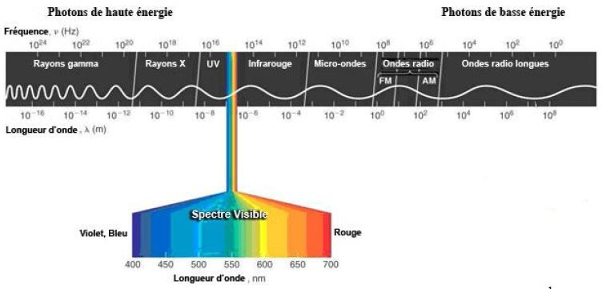
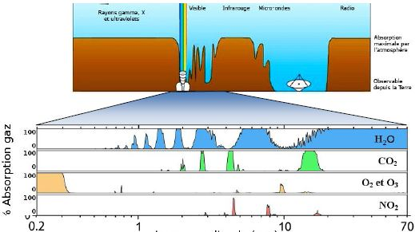
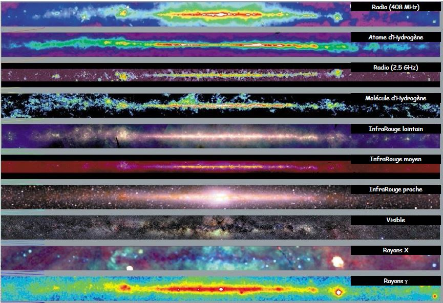
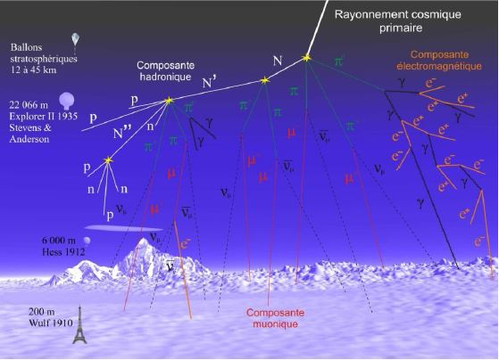
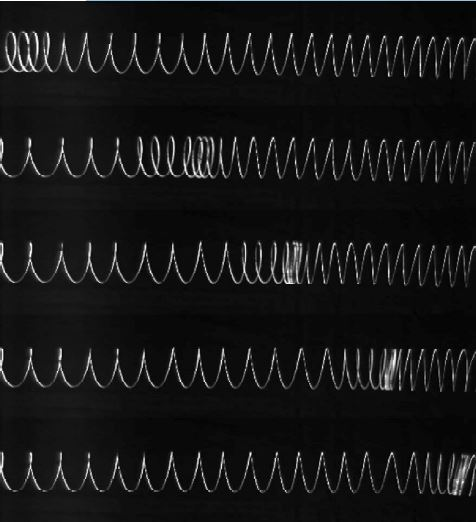
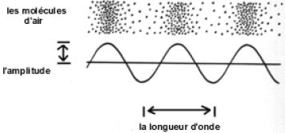
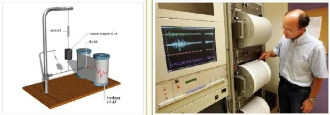
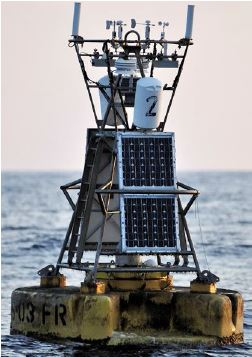
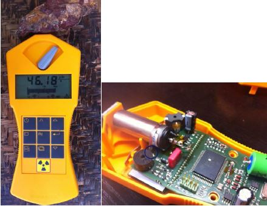
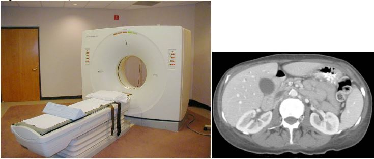

I- Les rayonnements électromagnétiques
1°) Le spectre
- Le rayonnement est un phénomène physique qui peut être décrit de deux manières différentes :
- Particulaire par la propagation de photons,
- Ondulatoire par la propagation d’une onde électromagnétique.
- Le spectre des ondes électromagnétiques est composé d’une infinité de radiations.
Chaque radiation est caractérisée par sa longueur d’onde dans le vide λ (en m) ou sa fréquence ν (en Hz).

- Dans le vide, ces ondes se propagent à la célérité c valant c = 299 792 458 m.s-1.
Longueur d’onde, fréquence et célérité sont liées : ν = c/λ
2°) L’atmosphère terrestre , un filtre chimique
Les différents constituants de l’atmosphère terrestre ont la capacité d’absorber partiellement ou totalement
certains rayonnements provenant de l’univers :

Observer l’univers peut alors nécessiter de quitter l’environnement terrestre proche : c’est le cas par exemple
des rayonnements U.V. et X, d’une partie des rayonnements I.R. et de certaines ondes radio. Seuls des capteurs installés
sur des satellites artificiels permettent d’étudier les sources émettant ces rayonnements.

3°) Les particultes cosmiques
-
Le Soleil, les autres étoiles de la galaxie et les autres galaxies constituent d’inombrables sources de
rayonnements mais aussi de particules de plus ou moins hautes énergies, telles que des protons ou des
noyaux d’hélium.
-
Les particules parmi les moins énergétiques sont déviées par la magnétosphère de la Terre. Les autres
réussissent à pénétrer dans cette enveloppe gazeuse et interagissent avec les premières molécules
rencontrées. Des gerbes de nouvelles particules naissent alors et bombardent le sol terrestre.

II- Les ondes dans la matière
1°) Généralités
-
Contrairement aux ondes électromagnétiques, les ondes de type mécanique nécessitent un milieu matériel pour
se propager.
-
Comme toute onde, les ondes mécaniques transportent de l’énergie
2°) Exemples
a) Les ondes sonores
-
Les ondes sonores sont constituées d’une zone de compression et de dépression en déplacement.

-
L’espacement entre ces deux zones aux valeurs de pression différentes permet de définir la fréquence
de l’onde. Si la fréquence est comprise entre 20 Hz et 20 kHz environ, l’onde est audible par l’oreille
humaine : on parle d’onde sonore.
Rq. : Si la variation de pression a lieu en un laps de temps très court, on parle d’onde de choc.
-
L’écart entre la pression minimale et la pression maximale définit l’amplitude de l’onde. Si celle-ci est
très importante, l’onde peut avoir des effets néfastes et irréversibles sur l’appareil auditif.

b) Les ondes sismiques
-
Les ondes sismiques sont aussi des ondes mécaniques.
-
Il existe, entre autres, deux types d’onde ayant des vitesses de propagation (ou célérité) différentes :
- Les ondes de compression P
- Les ondes de cisaillement S
-
L’énergie transportée par ces ondes est considérable et provoque régulièrement des dégâts matériels
importants et des drames humains.
Rq. : Une onde sismique sous-marine peut se transmettre par réfraction à l’eau d’un océan et provoquer
un tsunami.
c) La houle
-
La houle est une onde mécanique se propageant à la surface de la mer et créée par le vent.
-
Un vent fort soufflant sur une longue durée engendre une augmentation de l’amplitude de la houle ainsi
que de l’énergie transportée par celle-ci.
III- Les capteurs
La nature du capteur dépend de l’onde, ou de la particule que l’on souhaite détecter, mais aussi de l’énergie
qu’elle transporte.
-
Les sismographes permettent de détecter l’épicentre d’un séisme.

-
Les bouées météorologiques amarrées au fond des océans permettent de mesurer la pression
atmosphérique, la température de l’air et de l’eau, la direction et la vitesse du vent, la hauteur et la direction
de la houle.

-
Des compteurs Geiger permettent de détecter des particules α et β.

-
D’autres capteurs sont sensibles aux différents rayonnements électromagnétiques et ont de multiples
applications (études astronomiques, détection d’obstacle, comptage de personnes par coupure de faisceau,
opacification de miroirs automobiles, photographie, scanner X, vérification de soudure par
gammamétrie…)
